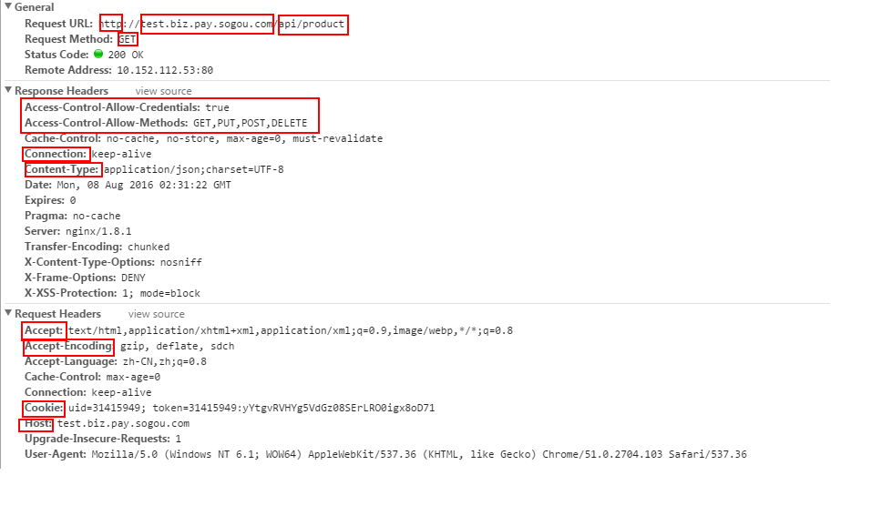
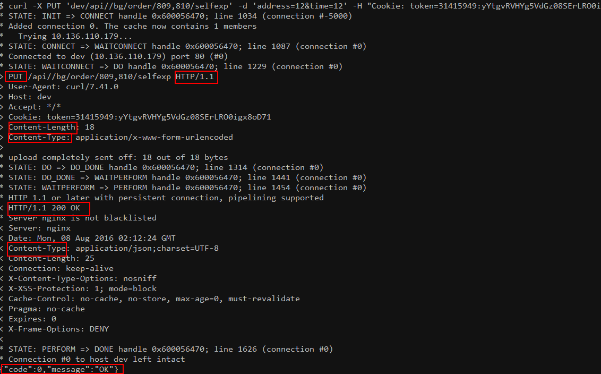
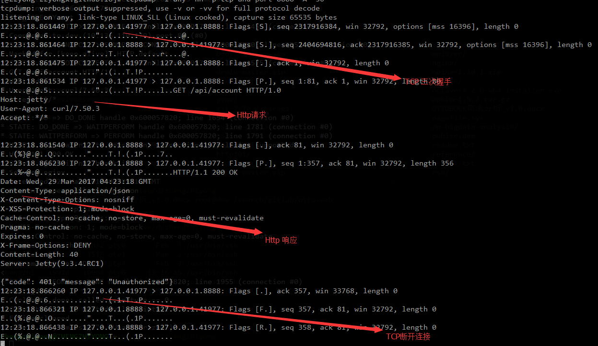
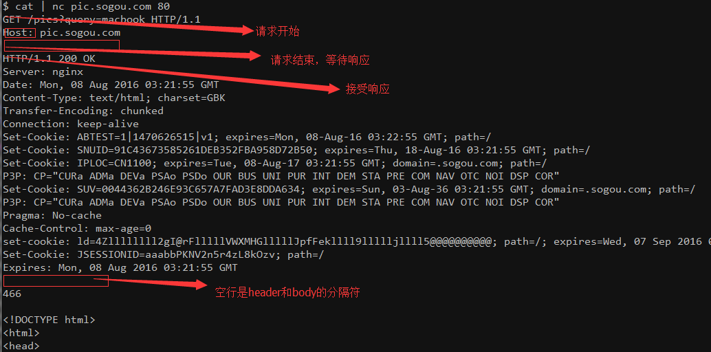

Created: 2017-04-20 四 15:35
scheme:[//[user[:password]@]host[:port]][/path][?query][#fragment] http://plus.sogou.com/api/account <img src="/plus.sogou.comimage/1234.png" />



METHOD PATH[?QUERY_STRING] HTTP_VERSION REQ_HEADER_NAME_1: REQ_HEADER_VALUE_1 REQ_HEADER_NAME_2: REQ_HEADER_VALUE_2 [REQ_HTTP_BODY] HTTP_VERSION HTTP_STATUS_CODE HTTP_STATUS_MESSAGE RESP_HEADER_NAME_1: RESP_HEADER_VALUE_1 RESP_HEADER_NAME_2: RESP_HEADER_VALUE_2 [RESP_HTTP_BODY]

| 方法 | 语义 | 备注 |
|---|---|---|
| GET | 查 | 可缓存，不改变服务端状态 |
| POST | 增 | 不幂等 |
| PUT | 改 | 类似POST，幂等 |
| DELETE | 删 | 请求无BODY |
取值 close 或 keep-alive
keep-alive HTTP请求结束，TCP连接不关闭
区别于TCP的KeepAlive
请求的主机名，多用于虚拟主机
客户端用来表明自己支持的（或需要的）数据格式。多用于服务端可以提供多种格式时。
例如：
Accept: image/webp,*/* 服务端可以知道客户端支持webp格式Accept: application/json 服务端需要返回json格式的数据，且只能返回json表明Body的数据格式
例如：
application/x-www-form-urlencoded multipart/form-data 等application/json; charset=utf-8 text/html; charset=utf-8这里charset用来表明使用的字符集
Transfer-Encoding:chunked, 多用于动态资源例如：
HTTP是无状态协议，使用cookie来记录两端的状态，例如记录登陆态。开发中的注意事项：
依赖浏览器，浏览器不严格区分数据和代码，通过在数据中加入代码，浏览器加载页面时执行代码。预防方法是检查输入数据，过滤掉代码部分或者破坏代码部分（例如，半角转成全角）
预防XSS时需要考虑数据除了在浏览器端，还可能在移动端APP展示。
诱导用户打开链接获益。例如：利用诱导用户打开转账链接（如果GET请求就可以转账的话）。预防方法是，GET方法只读取数据，POST方法忽略querystring的key-value，PUT、DELETE方法只能用AJAX请求，由于SOP，CSRF攻击无效。
除了证书额外花钱外，HTTPS连接建立慢是其一大劣势
while (true); do cat ~/rootproxy | nc -l 9000; done
可以用来模拟接口服务器做自动化测试
| 阶段 | 工具 | 重点关注 |
|---|---|---|
| 输入 | curl，tcpdump | 请求Header |
| WEB服务器 | jdb，各种Log | |
| 输出 | tcpdump | 响应Header |
tcpdump -nn -i any -p tcp and port 9001 -A -s0
模拟输入 path，querystring， header，body等
例如： curl -X PUT 'dev/api//bg/order/809,810/selfexp' -d 'address=12&time=12' -H "Cookie: token=31415949:yYtgvRVHYg5Vd"
Content-Encoding:gzip 表明是压缩Accept-Encoding: "" 表明自己不想要服务端压缩*/*, 而RestTemplate请求的Accept Header是 application/json; */*text/plain; charset=UTF-8 而RestTemplate的是 application/json*/* 问题解决